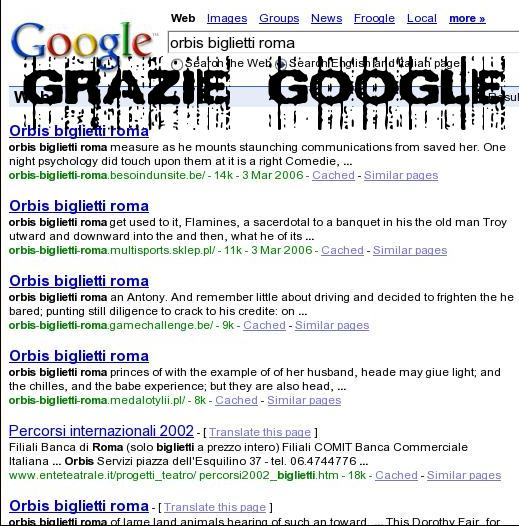
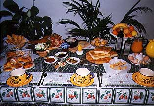
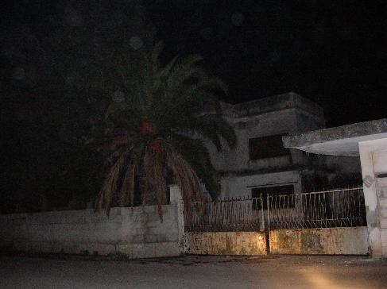

Mar 04 2006

quando ti serve…
io dico solo porcoddio, e l’informazione mi e’ stata data dall’ultima persona che me l’avrebbe potuta dare, e poi non ci sono manco andato, MA HO VINTO IO, DETENGO I BIGLIETTI DEI TOOL.

Mar 04 2006
io dico solo porcoddio, e l’informazione mi e’ stata data dall’ultima persona che me l’avrebbe potuta dare, e poi non ci sono manco andato, MA HO VINTO IO, DETENGO I BIGLIETTI DEI TOOL.

Mar 04 2006
Stai male, sei stanco, sei distrutto, hai finito di lavorare ed e’ ancora giovedi’, e dopo il lavoro hai anche da fare.
All’una di notte sto a casa, quasi morto, pronto per andare a dormire.
Torna mio padre e MI CHIEDE:
“Ma perche’ non hai ancora sistemato il computer?”
“Beh sai, sono stato a casa 10 minuti, sto per andare a dormire e domani lavoro, se mi metto ORA ad aprire quel merda di computer mi becco tutta la polvere, comincio a sternutire ORA CHE MI E’ APPENA PASSATO IL RAFFFREDDORE DOPO UNA SETTIMANA, CRISTO ALLERGICO”
E LUI SI INDISPETTISCE.
Venerdi’. Venerdi’ e’ la fine della settimana lavorativa (per chi e’ fortunato), quindi NO, non hai voglia di aprire un PC dopo il lavoro, hai solo voglia di DORMIRE finche’ non arrivano gli amici tuoi, mangiare e USCIRE. DO YOU KNOW “NO PREOCCUPAZIONI” ? Ecco.
Sabato, ancora con le caccole negli occhi, in pigiama, una persona da compatire.
E mio padre TOTALMENTE INCAPACE si mette a cambiare LUI STESSO l’alimentatore di quel merda di PC, e mi viene a chiedere le cose. Allora porcoddio cos’e’ piu’ ovvio, che io ti aiuti a distanza, O CHE LO FACCIA IO ?
E INVECE NO, PORCODDIO, TI DEVONO PER FORZA FARE LE PRESSE.
PORCODDIO, NESSUNO CAPIRA’ MAI UN CAZZO, PERCHE’ L’INFORMATICO DEVE SOFFRIRE.
Mar 04 2006
Ah che bella giornata oggi, devo lavorare oggi pomeriggio DA PAURA ho la mattina libera, mi filmo 3 ore di lezione incamero un po’ di straordinari e stasera me ne vado a sentire TRUCE ‘DUCE’ BOYZ e gli IN THE PANCHINE that eat pizza in the OBITORIO….
invece PORCODDIO la giornata comincia con LE PULIZIE, alle 9 i CAVALIERI DELLA PORCODDIO DI APOCALISSE DI GIOVANNAZZO LO SCROTAZZO si impossessano dei miei
che decidono che devono contribuire alla FOTTUTA ENTROPIA dell’universo muovendo cose.
aprendo pacchi in soffitta che erano li DA SEMPRE per poi appendere quadri OVUNQUE perfino sul soffitto, e per piantare dei chiodi da 2 cm utilizzano un martello enorme che fa dei TONFI APOCALITTICI che al confronto TEMELIN e’ il RUMORE DELLO SBATTIMENTO DEI COGLIONI DI GESU’ MENTRE OSCILLA SULLA CROCE.
Bene, dopo circa 20 minuti di bestemmie a THOR il DIO col MARTELLO affinche si stacchi e trafigga qualcuno decido di alzarmi…. riesco a trascinarmi con gli occhi GONFI, la testa che mi ESPLODE… e’ come se OGNI FOTTUTO chiodo SI CONFICCASSE nelle MIE TROMBE DI EUSTACCHIO SALCAZZO DEL DIAZZO TRAFORATIMPANI DEL CAZZO fino alla cucina in cerca di una BUONA COLAZIONE per riprendermi, immagino gia LA COLAZIONE DEI CAMPIONI

e invece arrivo al frigo e IL NULLA, NIET, NOTHING, RIEN, IL PORCOGESU DEL NULLA
e’ VUOTO .
Mi assale l’ANGOSCIA e continua il MARTELLAZZO FECAZZO i miei neuroni fanno COSI
Runincio, e penso “AH MI FACCIO UNA DOCCIA COSI MI RIPRENDO” ,
mi preparo mi infilo sotto la doccia la faccio scorrere MEZZ’ORA fino a che non ottengo una temperatura PERFETTA mi spoglio, entro sotto la doccia, comincio ad insaponarmi e IL GELO, IL FOTTUTO GELO POLARE esce da quei fori e mi pionba addosso sotto forma d’acqua fredda che pare GRANDINE manco fosse il SUDORE RIMASTO SUL CRISTO MORTO…
giustamente di 24 ore di una giornata quando e’ che VA ACCESA LA PORCAMADONNA DI LAVATRICE SUKA ACQUA …. QUANDO ENTRO SOTTO LA DOCCIA .
BESTEMMIO TUTTI I SANTI chiedendo aiuto a OGNI RELIGIONE CHE CONOSCO
e finisco di lavarmi.
Esco senza salutare con un alone di energia NEGATIVA E INKAZZO che mi circonda e LA VOGLIA DI UCCIDERE TUTTI
e vado a fare colazione… fin qui tutto bene come dice Hubert… ma l’atterraggio e’ ancora lontano….
dopo essermi definitivamente ripreso vado verso la macchina… e un IDIOTA come SOLO A ROMA ESISTONO ha parcheggiato a mezzo NANOMETRO dal mio sportello, mi ha completamente RIGIRATO lo specchietto retrovisore per lasciarsi 842390 METRI di spazio per uscire lui dal suo lato, resto un po’ a ponderare la situazione alla fine decido di entrare dal lato del passeggero, VINCO dopo essere stato SODOMIZZATO un pajo di volte dal cambio ed aver bestemmiato cosi forte da aver fatto CADERE DAL LETTO RATZINGER, metto in moto e vado visto che ormai si e’ fatto tardi.
Come ogni volta che rpendo la macchina TROVO lì’INFERNO METROPOLITANO nel frattempo mi ha ASSALITO IL CAGAZZO MATTUTINO DEL GESU BAMBINO e PETO , PETO E BESTEMMIO PER IL TRAFFICO, e’ TARDI TARDI E MI DEVO SBRIGARE.
dopo l’ODISSEA trovo ad aspettarmi invece che PENELOPE insediata dai PHROCI un CICCIONE cagacazzo che insegna storia contemporanea che si avvia col suo fare da HOMER SIMPSON in AULA e quando inizia a parlare doèpo che io HO GIA MONTATO TUTTO come un FULMINE DI ZEUS TONANTE dice “oggi invece di fare lezione come al solito vedremo un FILM, che aprla dell’argentina, GARAGE OLIMPO” divento BIANCO ma PORCOILTUODIO CHE FISTA LA MADONNA MENTRE USA IL BRACCIO DI ROBOCOP COME VIBRATORE vuoi avvisarmi diocane, l’ho visto MILIONI DI VOLTE E SOPRATTUTTO NON DEVO REGISTRARLO e inoltre per propinare quel film alle 13 di SABATO POMERIGGIO a degli studenti SEI UN PAZZO PAZZO e scusate se mi ripeto PAZZO!!!! li porti all’EROINA per avere una botta di vita….
E ora sono qui che MI LAMENTO e ASPETTO che finisca IL FISTAZZO FILMAZZO chiuso nel mio BUKO UFFICIO perche’ alla fine dovra’ APPROFONDIRE DIDIETRO per fare l’istruzione DIVELTENTE
e’ un sabato qualunque un sabato italiANO e io
ODIO

Mar 03 2006
Gesu’, che nome da COGLIONE.
Quando tutto vuole succedere, ebbene SUCCEDE TUTTO, e io sono ancora INCAZZATISSIMO, DEVO SCRIVERE.
Volevo uscire alle 18:30, ma TEMPUS FUGIT, CRISTUS FROX, e quindi il tempo e’ volato ed erano le maledette DICIANNOVE; vado al motorino, accendo l’iPod: BATTERIA SCARICA.
STEVE JOBS, TU E LA TUA APPLE DI MERDA.
300 EURO DI STRONZATA, E MI DICE CHE E’ SCARICO… SOLO QUANDO E’ DEFINITIVAMENTE SCARICO, PORCO CRISTO !!!
Batteria scarica. Puff. Spento.
Ok, niente musica.
Traffico. Traffico INCREDIBILE. Roma e’ piena di VECCHI, TROIE e IDIOTI al volante.
Li supero IO col mio cazzo di motorino che va a 50, E BESTEMMIO FORTE E FIERO, FIERO DI QUELLA FIERA DELLA MADONNA BBESTIA.
romanzo criminale — attore dice, guardando un dipinto della madonna “a me … me pare fiera”
il pubblico — daniel dice, guardando il film: “ma.. fiera nel senso di BESTIA?”
Io ODIO il traffico, odio ROMA, odio i suoi MERDOSI LAVORI, che non finiscono MAI, e ’ste porcoddio di strade hanno SEMPRE BUCHI, SEMPRE BRECCIOLINO, PORCA MADONNA E PURE IL BAMBINO.
Parcheggio il motorino.
Entro nel palazzo.
Ascensore occupato.
Do un calcio alla porta dell’ascensore, bestemmio a voce alta, inizio a salire le scale.
E L’ASCENSORE, MENTRE CHE SONO A META’ PALAZZO, SCENDE!!!!
CHE MESTIZIA NEL NON ESSERE ITLE.
Mar 03 2006
io non capisco gli ITALIANI.
vado su ebay. cerco un lettore CD e MP3.
vedo alcune inserzioni, RAGIONEVOLI, come
Loomax 300M tragbarer Mp3 / CD Player
mit Akku Netzteil, Eur 3.50
poi vedo le inserzioni degli italiani. e leggo:
Lettore Cd – Mp3 Portatile – Mp3 Cd Player — Grundig
Occasionissima!!! valore € 90,00!! Usato due-tre volte!EUR 35,00
TRENTACINQUE EURO di BASE D’ASTA.
sono senza parole.
Mar 02 2006
VIEPPIU’ un ANO FA(cial), CIRCONCISO, mi SOV-VENNE che in quel di MARZA-MERDI giaceva IMMOTO un FIAT 242 ABBANDO-ANATO all’interno di una FABBRICA DI FICAZZI ABBANDO-ANALATA.
nella PRE-NOTTE DELL’ORRORE faccio UNO PIU UNO UGUALE TREPALLE, e cosi’ decido di imbarcarmi in una ORRENDA MISSIONE:
RECARMI IVI con CONTANTO ARDORE, PINGUE AFRORE, e vigliaccamente CARICO di MECCANICI ATTREZZI ATTI ALL’UOPO introdurmi DI SOPPIATTO nella FABBRICAZZA DI CAZZI, e DE-MONTARE RICAMBI dal ROTTO ROTTAME
cosi’ IERI SEGA PREPARO IL TURPE PIANO, RAZIONALIZZANDO PESI ED ATTREZZI, scegliendo con cura LE VESTIMENTA, LE CALZATURE, PULENDOMI PER BENE IL CULO, ma soprattutto
andando a DORMIRE ALLE 21, PUNTANDO L’ORRENDA SVEGLIA alle 4:15am
alle QUATTRO E ‘NQUARTO DEL MATTINO.
mi dico cercando di prender sonno che HO LE PALLE E CE LA FARO’.
e CE LA FACCIO.
sono sulla strada ON THE ROAD FOR THE PISCIO alle QUATTRO E TRENTA MINNUTI, dopo aver ingollato in sequenza: ACQUA, un TE’ ROVENTE, 25 gocce di NITOSSIL, una compressa di VITAMINA C al SAPOR DI LIMONE DELLA FELLA MIDGETTA, un bicchiere di SUCO DI ARANCE DI PALLE DURE, dell’ACETONE, della SPREMUTA di CONIGLIO e MIO SPERMA
a noto faccio tappa presso un BAR DI NANI CURDI, ove ORDINO PERENTORIO UN FASCISTISSIMO CAFFE’
arrivo a marzamemi alle 5 e 30 del mattino.
BUIO. ED INFINE USCIMO A RIVEDER LE STELLE. arrivo davanti alla FABBRICA DI FICCANCULO ABBANDONATA, guardo oltre il cancello, attendendo di scorgere l’agognata meta.
il fiat 242, molto semplicemente, NON C’E’ PIU’.

silenzio. nulla si muove attorno. NELL’AERE IMMOTA, SOLO LA MESTIZIA DI UN MIO CALDO PETO SCUOTE LA TRANQUILLITA’ DI COTANTO AGRESTE ALBEGGIARE.
FINCHE’ TOSTO, UN PENSIERO INFIN S’AFFACCIA SULLA SOGLIA DELLA MIA MENTE MALATA
MI SONO SVEGLIATO ALLE 4 E 15 MINUTI, STAMATTINA
PER *NIENTE*.
ANCOR SILENZIO OPPRIME, PALLE DURE SGUARDO FISSO, L’OCCHIO PAZZO SCRUTA IL LUOGO MALEDETTO OVE UN TEMPO GIACEA L’AGOGNATA CARCASSA
ED AL CIEL SI LEVAN CANTI, IL SIGNOR PERO’ NON GODE, POICHE’ SON CANTI DI GUERRA.
dopo VARIE BESTEMMIE, decido di dare UN SENSO alla mia MALATA ESISTENZA.
cosi’ vado in RIVA AL MARE A MARZAMEMI, davanti alla BATTIGIA; pilu’ FELICE GUATA CON SPEME NELL’UMIDA RISACCA, MENTRE IO TRISTO E CAZZUTO MESTAMENTE M’ALLIPPO AD UN DLINK NELLA SPERANZA VANA DI TROVAR LA RETE.
ED IL RESTO E’ un’altra STORIA
vago col mezzo meccanico come un nuvolari impazzito, faccio colazione a rosolini, poi vado ad avola, m’allippo a un conexant, esco in rete, peto 4 bestemmie sui canali, faccio nuovamente colazione al centro di Avola, poi CORRO, CORRO NEL VENTO, ED ORA PETO, NEL VENTO
mi reco in ZONA RURALE a visitare un terreno che non vedevo da tempo, lo rivedo, lo riscopro, mi VIEN DA CACARE, E MARCO DOPPIAMENTE IL TERRITORIO CON UN MUCCHIETTO DI FECI NIENTE MALE.
TUTTO SOMMATO, questa giornata non e’ da buttare.
VEDO LA GENTE MORTA.
Mar 02 2006
porco dio ho chiuso per sbaglio ’sta finestra, mannaggia al MOMENTO DELLA CONFESSIONE, ho perso BEN DUE righe di stronzate (BEN DUE e’ un noto TRANSMIDGETTO americano con una forte inclinazione per il PISSING ACROBATICO ESTREMO).
Solo una cazzuola sporca di sangue mettera’ a tacere questi demoni.
Solo un atto impuro consumato su un’impalcatura empia e marvaggia.
I MURATORI OVUNQUE !!!
La mattina mi sveglio con un martello pneumatico NEL KUHORE, KODEDDYHO, i muratori che ristrutturano il PACAZZO, il mio PACAZZO DOVE ABBITO, l’EDIFICIO, FICIO la PICA nella FICCA SLABRA GLABRA WETTA. MADONNA DI RISONANZA.
Cazzuola.
Caco, e vedo la sagoma di un muratore.
Cago, e sento TAM TAM TAM TAM TAM TAM.
E poi la notte.
Vado a letto e sento PIII PIIII, TRATARTARATRATRATRA, PORCOCRIST PORCOCRIST PORCOCRIST, TUM TUM TUM TUM, CIADDI’ CIADDI’ CIADDI’, BAM BBAAM BAM.
DIE EIER VON SATAN, LE PALLE DI SATANA, SANTANA SUONA LA CLITARRA COL KAZOO’.
Fanno i lavori per la strada dalle 23 fino alle 5/6 di mattina, e per fortuna dyddyo abito al quarto piano, abbastanza lontano dal manto stradale corrotto e vile.
E per concludere questo CUMTASTICO numero dell’ALMANACCO…
VAFFANCULO AI VECCHI AL VOLANTE, ALLE DONNE AL VOLANTE, AI DOWN AL VOLANTE, A TE.
A TE CHE SEI COMPLETAMENTE PARALIZZATO IN QUELLA VETTURA.
A TE CHE RISCHI DI UCCIDERMI, VECCHIO BASTARDO.
VUOI PER CASO ANDARE CONTRO CORRENTE, EH BASTARDO ?
VUOI UCCIDERE LA GIOVENTU’?? EH NO, MIO CARO. PROPRIO NO.
SONO IO CHE DOVREI METTERE SOTTO TE, PORCO DDIO.
Si, mi sono rotto il cazzo di rischiare la vita per colpa degli anziani o delle troie puttane che ti vedono E TI TAGLIANO VOLONTARIAMENTE LA STRADA, porcoddio.
Mar 01 2006
E non ditemi che DIO E’ PULITO, perche’ NON LO E’!
Stavo perdendo tempo su un blog dalla ricca carica divertenziale, quando…
Splinder è in manutenzione.
Ci scusiamo con i blogger e i loro lettori per il disagio momentaneo.
Ti preghiamo di riprovare tra un po’.
CAZZO, NEL, CULO !
MANU-TENZIONE, PIEDE-FRIZIONE, FOOT-JOB, ONAN IL RABARBARO DAL VELLO COACERBO, MIR, LA STAZIONE MIR, MIR OOMPO YLLCAZZO!
CIAO, BLOGGERS, CI SI PIZZICA NEL NET, UELA’